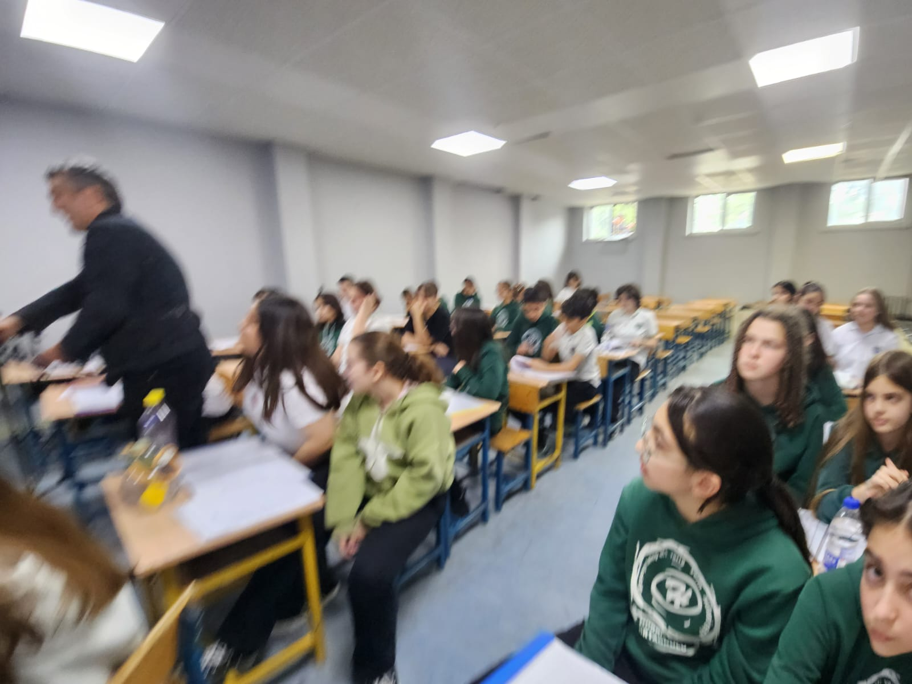
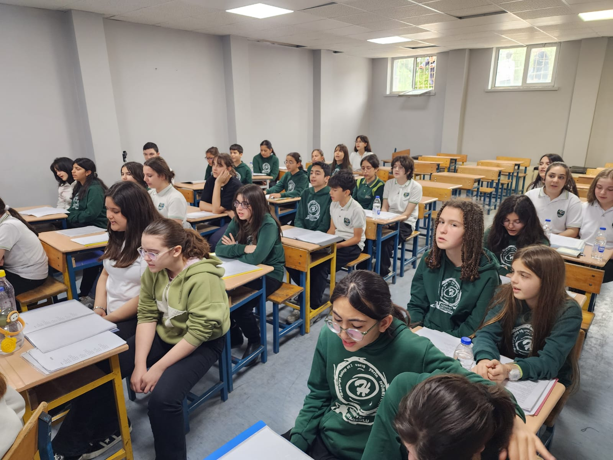
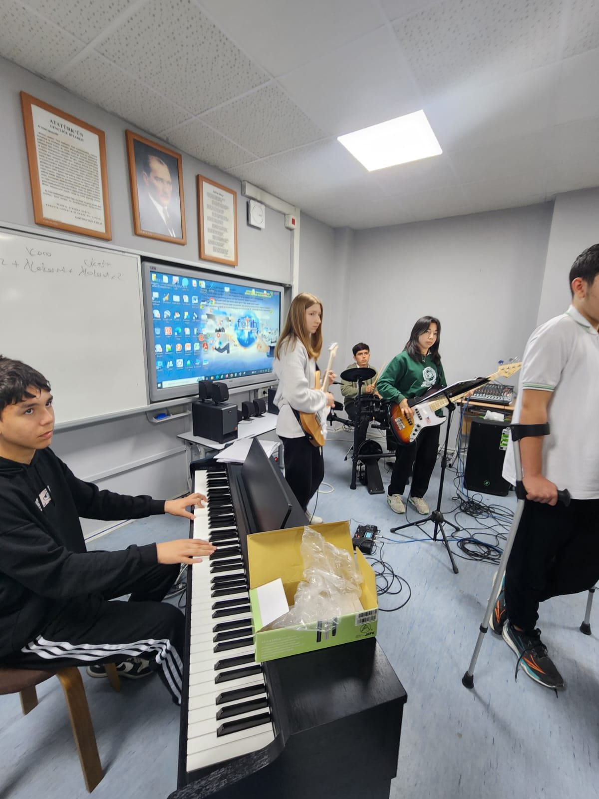
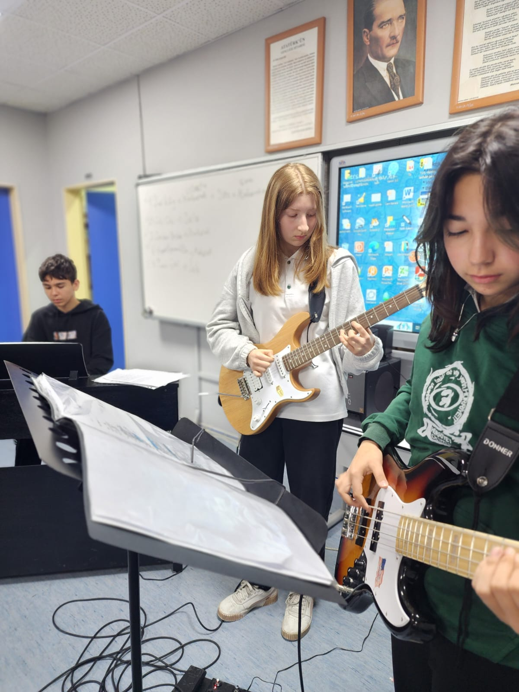
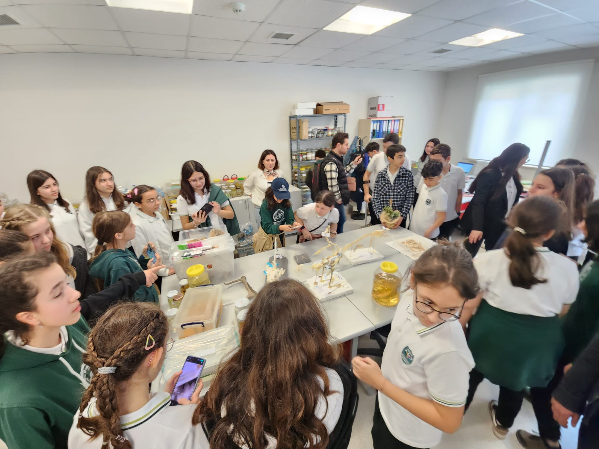
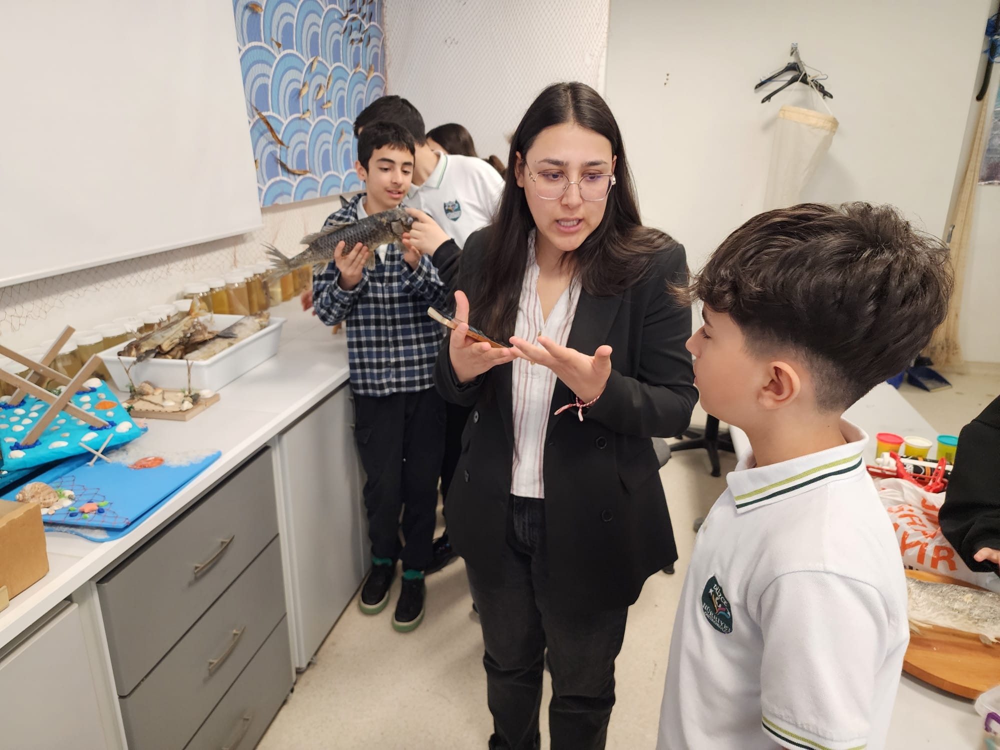
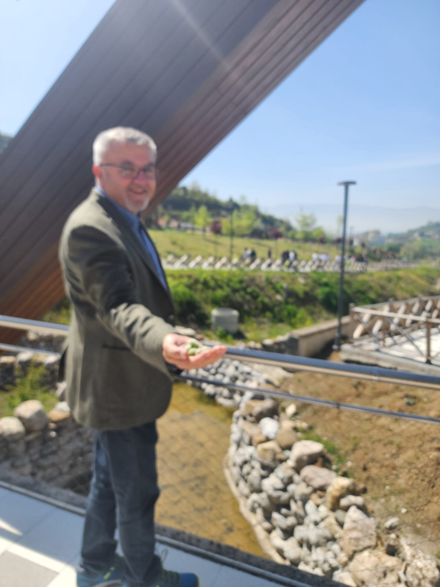
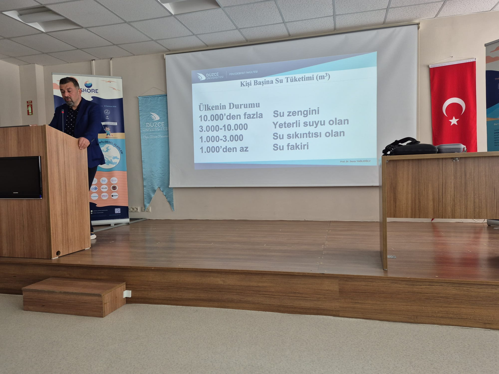
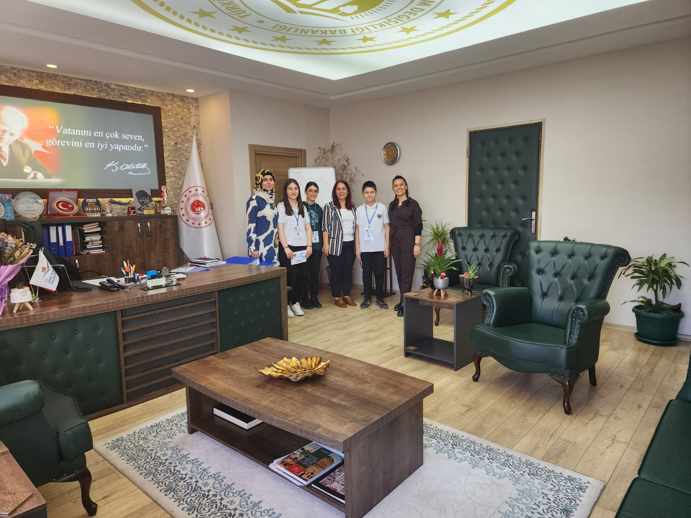

İstanbul Uluslararası Çoksesli Korolar Festivali Hazırlıkları

İstanbul Uluslararası Çoksesli Korolar Festivali Hazırlıkları

İstanbul Uluslararası Çoksesli Korolar Festivali Hazırlıkları

İstanbul Uluslararası Çoksesli Korolar Festivali Hazırlıkları

Fen Edebiyat Fakültesi Bİyoloji Bölümü Laboratuvar gezisi

Fen Edebiyat Fakültesi Bİyoloji Bölümü Laboratuvar gezisi

SHORE Mavi Ufuklar Projesi DÜ Botanik Bahçesi Gezisi

Prof. Dr. Zeki Demir Semineri

Düzce Çevre Şehircilik ve İl Müdürlüğü Röportajı